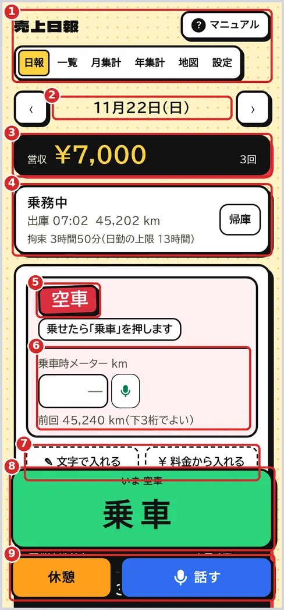

タクシー売上日報 使い方マニュアル
このページは読むだけのマニュアルです。書き換えはできません（内容の直しはClaudeが行います）。青い字を押すと、その場所へ移ります。
目次（押すとその章へ）
このアプリは、乗車1件ごとの売上を、ボタン・数字キー・声のどれかで記録し、日・月・年に自動で集計します。このマニュアルは、全部の機能を説明する本編です。毎日の操作だけならかんたん手順書、画面を見ながら覚えるなら図解マニュアルを使ってください。
説明は、ふだん使う「単体版」が前提です。Claude版との違いは付録Bにあります。初めての人は1〜5章を読めば使い始められます。
1. このアプリでできること
乗車1件ごとに、料金・支払方法・乗車地・降車地・時刻を記録し、出庫・帰庫のときにメーターとタクシーメーターの集計を記録します。記録はそのまま日・月・年の集計と地図になります。
画面は、いちばん上の6つのボタンで切り替えます。
| 画面 | 使う場面 | 見られるもの・できること |
|---|---|---|
| 日報 | 乗務中ずっと | 乗車ごとの記録、その日の営収、今日の流れ（出庫・乗車・休憩・帰庫の時刻順） |
| 一覧 | 記録を見直す・まとめて直す | 1日分・1か月分の乗車記録の表。マスを押して直せる |
| 月集計 | 月の成績を見る | 月の営収、目標までの残り、前月・前年同月・複数年との比較、日ごと・時間帯別・曜日別など。「分析」で時間の使い方・場所・料金帯など |
| 年集計 | 1年を振り返る | 年・年度・好きな期間の営収、前年・複数年との比較、月ごと・四半期など。「分析」もある |
| 地図 | 走った場所を見る | その日の乗車地・降車地のピンと順路の線（単体版だけ） |
| 設定 | ときどき | 画面の明るさ、バックアップと復元、記録を消す |
2. 使い始める
ホーム画面に置く（最初に1回だけ）
- iPhoneのSafariで https://rymannio-debug.github.io/taxi-nippo/ を開く。ログインはいらない
- 画面の下の共有ボタン（四角から矢印が出た印）を押す
- 「ホーム画面に追加」を選び、「追加」を押す
- ホーム画面のアイコンから開く
次からは、必ずホーム画面のアイコンから開いてください。Safariから開くと、記録が別の場所に分かれることがあります。
2つの許可
初めて使うときに、iPhoneから許可の確認が出ます。どちらも「許可」を選びます。
| 確認が出るとき | 許可すると |
|---|---|
| 初めて「乗車」を押したとき（位置情報） | 乗車地・降車地に地名が自動で入る。地図が見られる |
| 初めて［話す］を押したとき（マイク） | 声で記録できる |
許可しなかったときも記録はできます。地名は話すか文字で入れ、声はキーボードのマイクで入れます。
記録はどこに残るか
記録は、ボタンを押した瞬間にiPhoneの中の大きな保存場所に保存されます。電波がなくても保存され、何年分でも入ります。前の版で取った記録は、この版をはじめて開いたときに自動で移ります。
その代わり、記録はこのiPhoneの中にしかありません。故障や機種変更に備えて、月に1回はバックアップを取ってください（14章）。
保存できなかったときは、画面の上に赤い帯「記録を保存できませんでした」が出ます。出たら、すぐ帯の「バックアップを保存」を押してください。ホーム画面から使うと、アプリがiPhoneに「この記録は消さないで」と頼むので、空きが少なくなっても消えにくくなります。設定の「バックアップ」には、記録の保存先と大きさが出ます。
マニュアルを開く
アプリの右上の［？ マニュアル］を押すと、いまの画面に合った説明へすぐ行けます。
| 出るもの | 中身 |
|---|---|
| いまの画面の説明 | 開いている画面（日報・一覧・月集計・年集計・地図・設定）と、いまの状態（出庫前・乗務中・休憩中・帰庫済み）に合った章。押すと、そのマニュアルがその章で開く |
| 3つのマニュアル | かんたん手順書・図解マニュアル・使い方マニュアル |
| 困ったとき | 3つのマニュアルの「困ったとき」 |
帰庫したときの日報、修正画面、設定の「会社の決まり」にも、その説明へのボタンがあります。マニュアルは別の画面で開き、押した説明の見出しへ自動で移ります。マニュアルは読むだけのページで、書き換えはできません（内容の直しはClaudeが行います）。マニュアルの中の青い字を押すと、ほかの章やほかのマニュアルへ移ります。アプリに戻るときは、マニュアルの左上の［‹ 戻る］を押します。iPhoneのホーム画面に置いた版から開いたときは「完了」を押すと戻ります（Safariでアプリのアドレスを開くと、記録の入っていない別の画面になります）。Claude版から開いたときは、［‹ 戻る］でClaude版に戻ります。
AIに聞く ［？ マニュアル］の画面のいちばん上に「AIに聞く」の欄があります。「足切りはどこで入れるの？」のように打って「聞く」を押すと、答えと、根拠にした章へのボタンが出ます。ボタンを押すと、その章の見出しへ移ります。途中でやめるときは「止める」を押します。走行中は使わないでください。
| 版 | 答え方 | 費用 |
|---|---|---|
| 単体版（キーなし） | 質問に近いマニュアルの章を4つまで出す（AIは使わない。圏外でも使える） | なし |
| 単体版（Geminiのキーあり） | マニュアルをもとにAI（GoogleのGemini）が短く答え、根拠の章を出す | なし（無料枠。使いすぎると止まるだけ） |
| Claude版 | マニュアルをもとにAI（Claude）が短く答え、根拠の章を出す | あなたのClaudeの利用枠 |
AIの答えはまちがうこともあるので、章のボタンでマニュアルを確かめてください。Geminiのキーの入れ方は「14. 設定」の「AIに聞く（Gemini）」にあります。
3. 日報の画面の見方
いちばん使うのは「日報」の画面です。次に押すボタンは、いつも画面のいちばん下に大きく出ます。画面を下へ動かしても、下のボタンは同じ場所にあります。
日報の画面の文字は、読みやすさを優先したUD（ユニバーサルデザイン）書体のBIZ UDPゴシックです。時刻・地名・金額は大きく濃くし、今日の流れでは降車地を「→」の下の行に出しています。

- 画面の切り替え 日報・一覧・月集計・年集計・地図・設定。右上の［？ マニュアル］で、いま開いている画面の説明を開ける（2章「マニュアルを開く」）
- 日付 ‹ › で前後の日へ。別の日を開いているときは「今日」が出る
- 営収の帯 その日の営収と回数、目標までの残り。押すと下の営収のカードが大きく開く
- 乗務のカード 出庫前・乗務中・帰庫済みと、出庫の時刻とメーター、拘束時間（10章）。ここの「出庫」「帰庫」でも出庫・帰庫できる
- いまの状態の札 空車・乗車中など。となりの枠に、次にすることが出る
- メーター 空車のときは乗車時メーター、乗車中は降車時メーターの欄（設定が「乗車・降車のたび」のときだけ出る）
- 文字で入れる・料金から入れる ふだんはたたんである「話した内容」と料金の欄を開く
- 次に押す大きいボタン 上の小さい字は、いまの状態（例：「いま 乗車中 12分」）
- 休憩・話す 押せないときは薄くなり、押すと理由が出る。帰庫は、話すの隣で押し間違えないように④の乗務のカードにある。画面の小さいiPhone（SE・8）では、休憩｜乗車｜話す が1列に並ぶ
画面を下へ動かすと、次のものが並んでいます。
| 部分 | 中身 |
|---|---|
| 営収のカード | 回数・単価・税抜・時間あたり・実車率・休憩。「大きく表示」で大きい数字と目標が出て、「内訳を見る」で支払方法別の金額が出る |
| 今日の流れ | 出庫・乗車・休憩・帰庫が上から時刻の順に並ぶ。いちばん下の「いまここ」がいまの状態。行を押すと直せる（11章） |
| この日の日報を1枚で見る | その日のまとめ（13章） |
| この日の乗車・降車を地図で見る | その日の地図（13章。単体版だけ） |
| 乗務情報・目標 | 出庫・帰庫の時刻とメーター、目標、休憩の一覧（10章） |
いまの状態と下のボタン
いまの状態は、色のついた札と、下の大きいボタンの上の小さい字でわかります。大きいボタンの文字と色は、状態に合わせて変わります。

| いま | 札の色 | 下の大きいボタン | 押すと |
|---|---|---|---|
| 出庫前 | 灰色 | 出庫（緑） | 出庫の時刻が入り、出庫メーターを聞かれる |
| 空車 | 赤 | 乗車（緑） | 乗車の時刻と乗車地が入る |
| 乗車中 | 緑 | 降車（赤） | 降車の時刻と降車地が入る |
| 降車済み | 紫 | 料金へ（紫） | 料金の数字キーが開く |
| 休憩中 | だいだい色 | 休憩終了（だいだい色） | 休憩が終わる |
| 帰庫済み | 灰色 | 乗車（灰色） | 「この日報は帰庫済みです」と確認が出る |
下の小さいボタン（休憩・話す）と、帰庫の場所は次のとおりです。
- 休憩：空車のときだけ押せる（9章）
- 話す：声で入れる（6章）
- 帰庫：下の段にはありません。上の乗務のカードの［帰庫］を押す（話すの隣で押し間違えないように）
数字キーや文字を入れているあいだは、押し間違えないように下のボタンは隠れます。iPhone SEのような縦の短い画面では、下のボタンは少し小さくなります。
走行中の画面
乗務中に車が走りだすと、画面が「いまの状態・今日の営収・［話す］」だけの大きな画面に変わり、止まるといつもの画面に戻ります。走行中に画面を見続けたり操作したりすることは、道路交通法で禁じられています（止まっているときは対象外）。声での記録は走行中も使えます。
| こと | 中身 |
|---|---|
| 走行中の判断 | GPSの速さで、時速11km以上が続くと走行中、時速5km未満が続くと停車。位置が1分届かなければ停車とみなす |
| 動くとき | 出庫から帰庫まで、アプリを開いているあいだだけ。iPhoneのホーム画面の版で位置情報をオンにしているとき |
| 打ちかけの入力 | 消えずに残る。止まってから続きを入れる |
| 同乗しているとき | 「運転していない（同乗している）」を押すと、15分は出ない |
| 出さないようにする | 設定の「乗務中の画面」→「走行中の画面」で「いつもの画面のまま」 |
GPSを使い続けるので、乗務中は充電しながら使ってください。
4. 1日の流れ
1日は、出庫から帰庫までのあいだに「乗車 → 降車 → 料金と支払い」をお客様ごとにくり返します。押すのは、いつも下の大きいボタンです。
| いつ | 押すボタン | 自分で入れるもの | 自動で入るもの |
|---|---|---|---|
| 出庫したとき | 出庫 | 出庫メーター（下3桁） | 出庫時刻、出庫地点（単体版） |
| お客様を乗せたとき | 乗車 | なし（設定が「乗車・降車のたび」なら乗車時メーター） | 乗車時刻、乗車地 |
| お客様を降ろしたとき | 降車 | なし（設定が「乗車・降車のたび」なら降車時メーター） | 降車時刻、降車地、距離 |
| 料金を受け取ったとき | 数字キーで料金 → 支払方法 | 料金、支払方法 | 案件番号。支払方法を押すと記録される |
| 休憩するとき | 休憩 → 休憩終了 | なし | 休憩の時間、休憩の地点（単体版） |
| 帰庫したとき | 乗務のカードの［帰庫］ | 帰庫メーター（下3桁）、タクシーメーターの集計（営業回数・実車キロ・運収）、手元の現金 | 帰庫時刻、帰庫地点（単体版）、走行距離、実車率、記録との照合、納金 |
どうしても入れなければならないのは料金だけです。メーターは、はじめの設定では出庫・帰庫のときだけ入れ、帰庫したらタクシーメーターの集計を写します（10章）。乗車ごとにも入れたいときは、14章で「乗車・降車のたび」を選ぶと、表の乗車時・降車時メーターも聞かれます。
5. ボタンと数字キーで記録する
停車してから操作します。下の大きいボタンを出てくる順に押し、数字はアプリの数字キーで入れます。
1件を記録する手順
- 乗せたら「乗車」を押す。表示が「乗車中」に変わり、乗車地に地名が入る
- 設定が「乗車・降車のたび」のときは数字キーが開くので、乗車時メーターの下3桁を入れる。3桁目で自動で閉じる
- 降ろしたら「降車」を押す。降車地に地名が入る
- 乗車時メーターを入れていれば数字キーが開くので、降車時メーターの下3桁を入れる。走った距離が入り、そのまま料金の数字キーに移る
- 料金を入れる（例：「24」「00」で ¥2,400）
- 右の列の支払方法を押す。押すとそのまま記録される
記録すると画面の上に知らせが出て、営収が増えます。はじめの設定（出庫・帰庫のときだけ）では2と4がとばされ、「降車」を押すとすぐ料金の数字キーが開きます。
数字キー
メーター・料金・距離の欄を押すと、iPhoneのキーボードの代わりに、画面の下に大きな数字キーが出ます。キーの上には、入れている欄の名前と数字が大きく出ます。メーターでは、補った全部の桁と前回からの距離も出ます。
| キー | できること |
|---|---|
| 確定 | 数字を決めて次へ進む。メーターは下3桁で自動で進むので、ふだんは押さなくてよい |
| . | 小数点（メーター・距離） |
| ⌫ | 1文字消す |
| クリア | 全部消す |
| 閉じる | 数字キーを閉じる |
すでに数字が入っている欄を開くと、最初に押したキーで入れ替わります。直すときに消す手間はいりません。
料金の数字キーと支払方法
料金のときは、数字キーの右の列が支払方法になります。支払いを押すと料金が決まり、そのまま記録されます。料金の数字キーには「確定」「クリア」「閉じる」はなく、0を2つ入れる「00」があります。
| 場所 | ボタン |
|---|---|
| 右下の大きいボタン | いちばんよく使う支払い（例：「現金で記録」）。記録のある最近60日分から決まる。声や文字で支払いを入れてあるときは、その支払いになる |
| その上 | 2番目によく使う支払い |
| いちばん上 | 「その他の支払い」。現金・カード・電子マネー・QR決済・チケットと、配車アプリ（GO・Uber・DiDi・S.RIDE・ほかのアプリ）から選ぶ。「料金に戻る」で数字を直し、「記録せずに閉じる」で閉じる |
料金が空のまま支払いを押すと、記録されず「先に料金を入れてください」と出ます。
2名以上・迎車・高速代
支払いを押す前に、料金の数字キーのいちばん上の段（迎車・1名・高速代）で入れます。数字キーに隠れないので、画面を動かさずに押せます。
- 迎車：押すと「迎車あり」で黄色になる。もう一度押すと消える
- 人数：押すたびに 1名→2名→…→5名→1名 と変わる（料金の欄の下の［−］［＋］でも変えられる）
- 高速代：押すと高速代の数字キーになる。金額を入れて「確定」を押すと、料金の数字キーに戻る
これらを押しても、料金の数字キーは開いたままです。記録すると元に戻ります。
メーターは下3桁でよい
メーターは車の走行距離計の数字です。45,230 kmなら「230」と入れれば、上の桁は前回の数字からアプリが補います。欄の下に「45,230 km 前回から +12 km」と出るので、その場で確かめられます。
- 最初の1回だけは、全部の桁を入れる
- 乗車時メーターは、前回から60km以内なら3桁目で自動で閉じる。離れているときは「確定」を押す
- 全部の桁を打つ人は、4桁目を打った時点でアプリが覚え、自動では閉じなくなる。また3桁で入れると元に戻る
- 補われた数字が違うときは、全部の桁を入れ直す
- 降車時が乗車時より小さいときは注意書きが出て、距離は入らない
はじめの設定は「出庫・帰庫のときだけ」で、乗車・降車のメーター欄と数字キーは出ません。実車キロ・実車率は、帰庫のときに写すメーターの集計の実車キロで出ます（写さない日は、乗車ごとに入れた距離の合計）。乗車ごとにもメーターを入れたいときは、14章の「メーターを入れるとき」で「乗車・降車のたび」を選びます。そのときに数字キーの右上の「毎回は入れない」を押すと、「出庫・帰庫のときだけ」に戻ります。
「乗車・降車のたび」のときは、下3桁の打ち間違いに備えて、乗車メーターが前回から60kmより離れているときや、移動距離が150kmを超えるときは、赤字で「離れすぎていませんか？」「長すぎませんか？」と出て、数字キーは閉じずに待ちます。そのまま記録するときは、記録前の確認でもう一度知らせます。
乗車地・降車地は自動で入る
「乗車」「降車」を押したときにいる場所の地名が、「調布市小島町一丁目」のように丁目まで入ります。位置も一緒に残るので、地図で見られます（13章）。
- 駅名や建物名にしたいときは、話して入れる。話した場所が優先される
- 違う地名が入ったときは、記録したあとに直す（11章）
- 圏外のときは地名が空になる。そのときは記録前の確認で ⚠ にならない
- 自動で入れたくないときは、「時刻・客層・きっかけ・天気」を開き、「乗車・降車で自動」をオフにする。同じ所の「乗車地を今いる場所に」「降車地を今いる場所に」で、押したときの場所を入れ直せる
料金だけを入れる・文字で入れる
乗せずにあとから記録するときは「¥ 料金から入れる」、文字で入れるときは「✎ 文字で入れる」を押します。ふだんたたんである料金や「話した内容」の欄が開きます。
料金を入れて数字キーを閉じると、画面の下に「記録」の帯が出ます。左に料金と支払方法が出て、支払いを選んでいないと赤字で「支払い未選択」と出ます。支払方法のボタンを押してから「記録」を押します。
押し間違えたとき
- 「乗車」を2秒以内に続けて押しても、2回目は受け付けない
- 「乗車」「降車」を押し間違えたときは、状態の札の下の「取り消す」を押す
6. 声で記録する
画面のいちばん下の真ん中の［話す］を押して、ひとこと言います。足りないものは、アプリが声で聞いてきます。停車してから使います。
話して記録する
- ［話す］を押す。すぐに聞き取りが始まり、話している言葉が大きく出る
- 話し終わると、約2秒で自動で止まる。すぐ止めたいときは「話し終わった」を押す
- 聞き取った料金・支払方法・区間が大きく出て、「2400円、カード、調布駅から府中駅まで。記録しますか」と読み上げる
- 合っていれば「はい」と言うか、「これで記録」を押す
確かめる画面で違うところがあれば、次のように直します。
| 違うところ | こうする |
|---|---|
| 支払方法 | 画面の支払いのボタンを押して変える。「カード」と言ってもよい |
| 料金 | 「直す」を押して数字キーで入れる。「3000円」と言ってもよい |
| 全部 | 「話し直す」を押す |
| 文字で直したい | 「閉じて、入力欄で直す」を押す |
| 記録をやめる | 「いいえ」「やめる」と言う。入れかけた料金と内容は消える |
聞き取った言葉は「話した内容」の欄に入ります。欄を押すと文字で直せ、「消す」で空にできます。
- 読み上げがいらないときは、話す画面の右上の「🔈 読み上げ」を押して消す。次からも消えたまま
- マイクを許可していないときや使えないときは、［話す］を押すと「話した内容」の欄が開く。キーボードのマイクで話す
- メーターの欄の横のマイクを押すと、数字だけ話せばそのメーターに入る
声だけで1日を進める
［話す］を押して、やりたいことをひとこと言います。
| 場面 | 話す例 | 足りないときに聞かれること |
|---|---|---|
| 出庫 | 「出庫」「出庫 190」 | 出庫メーターは？ |
| 乗せた | 「乗車」「乗車 230」 | メーターは？（メーターを使っているとき） |
| 降ろした | 「降車 236 2400円 カード」「降車」 | 降車メーターは？ 料金は？ 支払いは？ |
| 確かめる | 「はい」「記録」 | — |
| 確かめるときに直す | 「カード」「3000円」 | 直した内容でもう一度読み上げる |
| やめる | 「いいえ」「やめる」 | — |
| 休憩 | 「休憩」「休憩終わり」 | — |
| 帰庫 | 「帰庫」「帰庫 290」 | 帰庫メーターは？ |
| 直前の記録を直す | 「さっきのはカード」「取り消し」 | — |
例：降ろしたときに「降車」とだけ言うと、「降車メーターは？」→「245」→「料金は？」→「1800」→「支払いは？」→「カード」→「1800円、カード。記録しますか」→「はい」→「記録しました」と進みます。
- メーターを聞かれて入れないときは「なし」と答える
- 質問のあと聞き取りが始まらないとき（iPhoneの設定やClaude版）は、「🎤 答える」を押してから答える
- 読み上げを消しているときは、質問は画面の文字だけになる
- 乗車中に「帰庫」と言うなど、できない操作を言うと、その理由を声で知らせる
話し方の例
続けて話してかまいません。例：「調布駅から府中駅まで 2400円 カード」
| 入れたいもの | 話し方の例 | ひとこと |
|---|---|---|
| 料金 | 「2400円」「三千円」 | 必ず入れる |
| 乗車地・降車地 | 「調布駅から府中駅まで」 | 「から」「まで」で区切る |
| 支払方法 | 「カード」「ペイペイ」「スイカ」「チケット」 | 言わなければ「支払いは？」と聞かれる |
| メーター | 「メーター 230」「降車メーター 241」 | 下3桁でよい |
| 距離 | 「4.2キロ」「800メートル」 | メーターを入れれば不要 |
| 人数 | 「2名」 | 言わなければ1名 |
| 迎車 | 「迎車」 | |
| 高速代 | 「高速1320円」 | 料金とは別に残る |
| 客層 | 「観光客」「通院」「ビジネス」 | ボタンでも選べる |
| きっかけ | 「流し」「付け待ち」「無線」「アプリ配車」「予約」 | ボタンでも選べる |
| 時刻 | 「13時20分」 | あとからまとめて入れるときに使う |
7. 細かい項目
料金のほかに、次の項目を残せます。どれも入れなくても記録できます。支払方法は料金の欄の下にいつも出ています。客層・きっかけ・天気・時刻は、その下の「時刻・客層・きっかけ・天気」を押すと開きます。
| 項目 | 選べるもの | ひとこと |
|---|---|---|
| 支払方法 | 現金、カード、電子マネー、QR決済、アプリ決済（GO・Uber・DiDi・S.RIDE・ほかのアプリ）、チケット | 最初は未選択。ふだんは料金の数字キーの右の列で選ぶ |
| 客層 | ビジネス、観光、訪日客、高齢者、通院、買い物、飲み帰り、家族連れ、学生 | もう一度押すと解除 |
| きっかけ | 流し、付け待ち、無線、アプリ配車、予約、その他 | どうやって乗せたか。もう一度押すと解除 |
| 天気 | 晴れ、曇り、雨、雪 | 一度選ぶと、その日のあいだずっと付く |
| 乗車時刻・降車時刻 | 時刻 | 「乗車」「降車」を押すと入る。「今」で今の時刻に直せる |
| チケットの会社・番号 | 文字 | チケット払いのときだけ。修正画面で入れる。入っていないと帰庫の点検で知らせる |
料金に高速代は入れない
料金にはメーターの運賃だけを入れます。高速代は料金の数字キーの上の「高速代」で入れるか、「高速1320円」と分けて話します。営収や集計に入るのは料金だけです。受け取った総額を料金に入れると、高速代の分だけ営収が多く出てしまいます。
案件番号
記録した乗車には「261118-03」のような番号が自動で付きます。前の6桁は日報の日付（2026年11月18日）、後ろの2桁はその日に乗せた順番（3件目）です。日報、一覧、地図、CSVに同じ番号が出ます。
- 深夜0時を過ぎても、出庫した日の番号が続く
- 時刻を直したり記録を消したりすると、その日の番号が時刻の順に振り直される
8. 記録前の確認と1日の点検
入れ忘れやおかしな値があると、記録する前に「記録前の確認」の一覧が出ます。漏れがなければ一覧は出ず、そのまま記録されます。
| 印 | 意味 |
|---|---|
| ✓ | 入っている |
| ⚠（黄色） | 入っていない、または値がおかしい。押すとその欄へ移って直せる |
| –（灰色） | 任意の項目。入っていなくてもかまわない |
⚠ になるのは、支払方法が未選択、時刻がない、乗車地・降車地がない、設定が「乗車・降車のたび」なのにメーターがない、料金が¥500未満か¥50,000より多い、降車時刻が乗車時刻より前、降車メーターが乗車メーターより小さい、のときです。
直すときは「戻って直す」、そのままでよいときは「このまま記録」を押します。声で入れているときは「乗車地、降車地が入っていません。このまま記録しますか」のように読み上げるので、「はい」で記録、「調布駅から府中駅まで」のように言えばその場で直ります。
圏外などで位置が取れなかったときは、乗車地・降車地は ⚠ にならず「任意」の扱いになります。
帰庫したときの1日の点検
帰庫すると開く日報の上に、1日分の点検結果が出ます。漏れがなければ「✓ 入力の漏れはありません」と出ます。点検するのは次のものです。
- 出庫・帰庫の時刻とメーター
- 乗車ごとの漏れ（案件番号つき。乗車地・降車地・おかしな料金・チケットの会社名。設定が「乗車・降車のたび」ならメーターも）
- 前の乗車と時間が重なっている乗車
- 6時間以上の乗務で休憩が0分
- タクシーメーターの集計を写した日は、営業回数・運収と記録のちがい（記録漏れ・料金の打ち間違い）
- 現金を数えた日は、現金の過不足
行を押すと、乗車ならその乗車の修正画面が、出庫・帰庫や休憩なら「乗務情報・目標」が開きます。メーターの集計の行なら、日報を閉じずに集計の欄へ移ります。声で帰庫したときは、「確かめてほしいところが3件あります」のように件数も読み上げます。
9. 休憩
- 空車のときに、画面のいちばん下の［休憩］を押す。札が「休憩中」になり、経過時間が出る
-
休憩が終わったら、下の大きいボタンの「休憩終了」を押す
-
休憩中にアプリを閉じても、時間は数え続ける
- 1分未満の休憩は残らない
- 休憩中に帰庫すると、休憩もその時刻で終わる
- 乗車中や出庫前は［休憩］が薄くなっていて、押すと理由が出る
休憩の合計は、営収のカード、「乗務情報・目標」、月集計に出ます。押し忘れた休憩は、「乗務情報・目標」の「休憩をあとから追加」で足せます。時刻を押すと直せ、「削除」を2回押すと消せます。
単体版で位置情報をオンにしていると、「休憩」を押した場所の地名が「休憩の地点」に入ります。乗務記録に書く「休憩の地点」です。Claude版や地名が取れなかったときは、「乗務情報・目標」の休憩の行の下の欄に入れます。
10. 出庫・帰庫と目標
出庫
- 出庫したら、下の大きいボタンの「出庫」を押す。出庫時刻が入り、札が「空車」になる
- 出庫メーターを聞かれるので、下3桁を入れて「確定」を押す。入れずに閉じてもよい
単体版で位置情報をオンにしていると、出庫・帰庫を押した場所の地名が出庫地点・帰庫地点に入ります。Claude版では「乗務情報・目標」で入れます。前に入れた地点が候補に出るので、営業所なら選ぶだけです。
帰庫
- 帰庫したら、上の乗務のカードの［帰庫］を押す
- 帰庫メーターを聞かれるので、下3桁を入れて「確定」を押す
- その日の日報が自動で開く（13章）
- 「タクシーメーターの集計を写す」に、メーターの集計（日計）の営業回数・実車キロ・運収を入れる（次の節）
帰庫は、話すの隣で押し間違えないように、下の段ではなく乗務のカードにあります。空車が3時間を超えると、空車の欄と今日の流れに「帰庫を忘れていませんか？」と出ます。押し間違えたときは、乗務のカードの「帰庫を取り消す」を押します。
帰庫した日報で「乗車」を押すと、「この日報は帰庫済みです」と確認が出ます。続けて乗せるときは「帰庫を取り消して乗車」、間違えたときは「やめる」を押します。日付が変わって次の勤務になっていれば、確認は出ずに次の日の日報に切り替わります。
帰庫したらメーターの集計を写す
帰庫したら、タクシーメーターの集計（日計）を見て、営業回数・実車キロ・運収を日報のいちばん上の「タクシーメーターの集計を写す」に入れます。プロが乗務記録に写すのと同じ数字で、アプリはそれを自分の記録と比べます。
| 入れるもの | アプリがすること |
|---|---|
| 営業回数 | 記録の回数と比べる。メーターのほうが多いと「1回分の記録漏れがあるかもしれません」と出る |
| 実車キロ | 実車率（実車キロ ÷ 走行距離）を出す。日報・月集計の実車率もこの数字になる |
| 運収（円） | 記録の営収と比べ、ちがえば差額を出す |
合っていれば ✓ が付きます。合わないときは「確かめてほしいところ」にも出るので、漏れた乗車を足すか、料金を直します。比べるのは料金の合計で、高速代は入りません。メーターの表示の名前は機種で少しちがいます。あとから直すときは「乗務情報・目標」の「タクシーメーターの集計」で直します。声で帰庫したときは、「メーターの集計を画面に写してください」と読み上げます。
現金を数える（過不足）
納金の前に手元の現金を数えて、日報の「現金を数える」に入れます。納金の現金に釣り銭の準備金を足した額と比べて、「✓ ぴったりです」か「500円足りない」のように出ます。合わないときは「確かめてほしいところ」にも出ます。準備金は隣の欄で入れられ、入れた額は毎日同じ額として設定の「会社の決まり」にも入ります（14章）。営業回数・実車キロ・運収と手元の現金・準備金は、押すと大きい数字キーで入れられます。
乗務情報・目標
「日報」のいちばん下の「乗務情報・目標」を開くと、出庫・帰庫の時刻と地点、メーター、タクシーメーターの集計をあとから入れたり直したりできます。目標もここで決めます。
| 入れるもの | 出るようになる数字 |
|---|---|
| 出庫時刻 | 1時間あたりの営収 |
| 帰庫時刻 | 乗務時間 |
| 出庫・帰庫メーター | 走行距離、1kmあたりの営収、実車率 |
| 出庫地点・帰庫地点 | 日報を1枚で見たときの「乗務」の欄（単体版は自動で入る） |
| 車番 | 日報を1枚で見たときの「乗務」の欄。出庫したとき、前の乗務の車番が自動で入る |
| タクシーメーターの集計（営業回数・実車キロ・運収） | 記録との照合、実車率 |
| 1日の目標（円） | 目標までの残り、達成率 |
| 月の目標（円） | 月集計での残り、達成率 |
| 1日の休憩の目標（分） | 休憩の残り（3時間なら180） |
実車率は、お客様を乗せて走った距離（実車キロ）を、出庫から帰庫までの走行距離で割ったものです。実車キロは、メーターの集計を写した日はその数字、写していない日は乗車ごとの距離の合計です（距離を入れなかった乗車の分だけ低く出ます）。目標は、営収のカードと月集計の「目標を設定」からも入れられます。
拘束時間と休息
乗務のカードに、出庫からの拘束時間が「拘束 8時間25分（日勤の上限 13時間）」のように出ます。上限は改善基準告示の数字で、勤務の形は設定で選びます（自動なら、最近の出庫〜帰庫の長さから判断）。
| 勤務の形 | 1回の拘束 | 前の帰庫からの休息 | 月の拘束 |
|---|---|---|---|
| 日勤（夜勤も） | 13時間（延長しても15時間まで） | 9時間以上 | 288時間 |
| 隔日勤務 | 22時間 | 22時間以上 | 262時間 |
上限まで1時間を切ると黄色で「あと50分」、超えると赤で知らせます。前の帰庫からの休息が短いときも、同じ行に出ます。月の拘束の合計は月集計に出ます（厚生労働省 タクシー運転者の改善基準告示）。
目標までのペース
1日の目標を決めていると、営収のカードのいちばん下に「帰庫予定 17:30まで 2時間10分。目標まで 1時間あたり15,868円」のように出ます。帰庫予定は設定で入れます。入れていなければ、最近6回の乗務のふつうの長さから決めます（3回ぶん以上の記録があるとき）。
11. 直す・取り消す
間違いは、あとからいつでも直せます。
| こんなとき | こうする |
|---|---|
| 記録した直後に気づいた | 画面の上に約60秒出る「取り消す」を2回押す（1回目は確認だけ）。中身を直すだけなら、となりの「直す」 |
| 直前の記録を声で直したい | 「さっきのはカード」「さっきの 3000円」「さっきのはメーター 241」「さっきの 降車地は府中駅」と話し、「修正する」を押す |
| 前の記録を直したい | 日報の「今日の流れ」でその行を押し、直して「保存」 |
| 「乗車」「降車」を押し間違えた | 状態の札の下の「取り消す」 |
| 入れかけた内容を全部やり直したい | 入力欄の下の「入力をリセット」（何か入っているときだけ出る）。すぐ消えて元に戻せない。保存済みの記録と天気は残る |
| 記録を消したい | その行を押し、「削除」を2回押す。元には戻せない |
| まとめて直したい | 「一覧」の表でマスを押して直す（13章） |
| 別の日の日報に記録してしまった | その記録を削除し、正しい日の日報で入れ直す。記録を別の日に移す機能はない |
修正画面
「今日の流れ」の乗車の行や、記録した直後の「直す」を押すと開きます。上から、料金・支払方法、乗車地・降車地、乗車時刻・降車時刻、人数・高速代の順に並びます。
- 人数は［−］［＋］で変える
- 支払方法がアプリ決済（またはきっかけがアプリ配車）のときは、「アプリ」でGO・Uberなどを選ぶ
- チケットのときは「チケットの会社」と「チケット番号」の欄が出る。前に入れた会社名が候補に出る
- 位置のある乗車地・降車地を打ち直すと、「この近く（150m）はいつもこの名前にする」が出る。選ぶと、次からその近くではこの名前が入る（14章）
- 距離・メーター・迎車・客層・きっかけ・天気・メモは、「その他」を押すと開く
- メーターを直すと、距離もメーターの差に合わせて直る
- 直したら「保存」、やめるときは「閉じる」、消すときは「削除」を2回
12. 日付の扱い
アプリを開くと、いまの勤務の日報が自動で開きます。
- 深夜0時を過ぎても、出庫した日の日報に続けて入る
- 次の日の日報に切り替わるのは、帰庫したとき、最後の乗車や休憩から8時間以上あいたとき、正午を過ぎたとき
- 切り替わるとき、入れかけの内容があれば、それを記録するまで待つ
‹ › で別の日を開くと、入力欄の上に「いま開いているのは○月○日の日報です」と出ます。そのまま記録するとその日に入るので、いまの勤務に戻るときは「今の日報へ」を押します。
あとからまとめて入れるときは、その日を開き、「13時20分 調布駅から府中駅 3200円」のように時刻も話します。
13. 見る・振り返る
その日の日報を1枚で見る
「日報」の「今日の流れ」の下の「この日の日報を1枚で見る」を押すと、その日の内容が乗務記録と同じ順に1画面にまとまります（下の表）。会社の日報に写すときは、この画面を上から読みます。入れていない項目は「—」と出ます。下の「CSVをコピー」「CSVを保存」で、同じ内容をファイルにできます。
| 欄 | 中身 |
|---|---|
| 乗務 | 運転者（氏名・乗務員番号）と車番、出庫・帰庫の時刻と地点、乗務時間、休憩の合計。夜勤の帰庫は「翌日 03:00」のように出る |
| 走行距離計 | 出庫時・帰庫時のメーター、乗務距離 |
| タクシーメーターの集計 | 営業回数・実車キロ・運収と、記録との照合 |
| 実車・空車 | 実車距離・空車距離・実車率 |
| 営収 | 回数（記録）・営収（税込・税抜）・単価・高速代 |
| 納金 | 現金、キャッシュレス（カード・電子マネー・QR決済・アプリ決済の内訳）、チケット。高速代を入れるかは設定で選ぶ（14章）。アプリ決済はGO・Uberなどの内訳、チケットは会社名も出る。現金を数えた日は、手元の現金と過不足 |
| 休憩（時刻・地点） | 休憩ごとの時刻・長さ・地点 |
| 乗車 | 案件番号・時刻・乗車地→降車地・支払い・料金 |
並びは、旅客自動車運送事業運輸規則第25条の乗務記録（乗務の開始・終了の地点と日時、休憩の地点と日時、走行距離計の数字など）に合わせています（関東運輸局の資料）。会社の乗務記録の用紙に写すときも、上から順に読めば済みます。
帰庫したあとの画面と画像の保存
帰庫メーターを入れると、その日の日報が自動で開きます（乗車の記録がない日は開きません）。いちばん上に「帰庫しました。お疲れさまでした。」と今日の回数・営収、納金（現金・キャッシュレス・チケット）が出ます。その下に「タクシーメーターの集計を写す」と「現金を数える」（10章）、1日の点検（8章）、順路の地図が出ます。前のバックアップから30日たっているとき（まだ取っていないとき）は、「いま保存する」のボタンも出ます。
| ボタン | できること |
|---|---|
| 画像で保存 | 日付・営収などの数字・順路の地図・乗車1件ごとの内容を1枚の画像にする。出てきた共有の画面で「画像を保存」を選ぶと「写真」に入る |
| 地図で詳しく見る | 「地図」の画面で、その日を1件ずつ見る |
画像は、あとからでも保存できます。「この日の日報を1枚で見る」の「画像で保存」か、「地図」の画面のいちばん下の「この日の地図とまとめを画像で保存」を押します。背景の地図はインターネットから読み込むので、電波の弱いところでは欠けることがあります。そのときは電波のあるところで保存し直します。
地図
上の「地図」を押すと、その日の乗車地と降車地がピンで並びます（単体版だけ）。
| 見えるもの | 意味 |
|---|---|
| 緑の丸いピン | 乗車地。中の数字は乗せた順番 |
| 赤い四角のピン | 降車地 |
| 緑の実線 | お客様を乗せて走った区間 |
| 灰色の点線 | 空車で次のお客様のところへ移った区間 |
| 線の途中の矢印 | 進んだ向き |
| ボタン | できること |
|---|---|
| 地図の下の ‹ › | 1件ずつ順に見る。その案件だけが濃くなる。「全体」で全部の表示に戻る |
| 乗車と降車・乗車だけ・降車だけ | 出すピンを選ぶ |
| 順路の線 | 線を出す・消す |
| 右上の「大きく」 | 地図を画面いっぱいに広げる。「元に戻す」で戻る |
| 右上の「淡色の地図」 | 背景を薄くして、ピンと線を目立たせる。押すと標準の地図に戻る |
ピンを押すと、案件番号・時刻・場所・料金・支払方法が出ます。線は地点をまっすぐ結んだもので、実際に走った道ではありません。位置が残っていない乗車は地図に出ません。
一覧
「一覧」では、乗車記録を紙の日報のような表で見て、マスごとに直せます。
- 「1日分」「1か月分」を切り替え、‹ › で前後に移る
- 表は横に動かせる。案件番号と時刻の列は左に残る
- 直したいマスを押し、入れ直して「保存」を押す。支払方法や客層などはボタンを押すとすぐ保存される
- 「保存して次へ」で、同じ列の次の行に移る。距離をまとめて入れるときに便利
- 「全項目・削除」で、その乗車の修正画面が開く
月集計・年集計
記録は自動で集計されます。‹ › で前後の月や年に移ります。
| 画面 | 上の合計 | 下の表 |
|---|---|---|
| 月集計 | 営収、目標までの残り、出番、回数、1出番平均、税抜、実車距離、実車率、休憩、拘束の合計、支払方法別（うちGOなど）、給料の見込み | 日ごと、時間帯別、曜日別、客層別、きっかけ別、天気別 |
| 年集計 | 営収、出番、回数、月平均、1出番平均、税抜、実車距離、支払方法別 | 四半期ごと、月ごと、曜日別、客層別、きっかけ別、天気別 |
- 年集計のいちばん上で「年（1〜12月）」「年度（4〜翌3月）」「期間を指定」を選べる。期間の指定には「今月」「先月」「過去90日」「全期間」のボタンもある
- 合計の下に、推移のグラフと前の期間との比較表が出る。途中の月は、前の月の同じ日までと比べる
- 月集計で日付を押すとその日の日報、年集計で月を押すとその月の集計が開く
- 緑の数字は、いちばん成績のよい行
給与の締め日を設定すると（14章）、月集計はその期間になります。20日締めなら「2026年11月分 10/21〜11/20」と出て、前月との比較やCSVもその期間です。年集計はカレンダーの月のままです。
歩率や足切りを入れると（14章「会社の決まり」）、月集計に給料の見込みが出ます。足切りに届いていなければ残りの額、歩率の段階を入れていれば次の段階までの額も出ます。何も入れていない月集計には「締め日・給与の計算を設定」のボタンが出て、押すと設定の「会社の決まり」が開きます。給与の計算で「大和自動車交通」を選んでいると、賞与の見込みも出ます。手当・控除・社会保険は入っていないので、目安として見てください。
給与の計算で「大和自動車交通」を選んでいると、年集計に「○年の給与と賞与の見込み」が出ます。その年に支給される賞与3回分（4月・8月・12月初旬。年度にすると8月・12月・翌年4月初旬）を、1出番平均・支給率・賞与の額で並べます。その下に、賞与の合計、記録のある月の月給の合計、年収の見込みが出ます。まだ終わっていない期間は「途中」として、ここまでの分で計算します。
前年・複数年と比べる
月集計と年集計の比較のカードで、上のボタンから比べる相手を選びます。選んだものは次に開いたときも残ります。
| 画面 | 選べる相手 |
|---|---|
| 月集計 | 前月、前年の同じ月、複数年（同じ月を年ごとに） |
| 年集計（年・年度） | 前年（前年度）、複数年 |
| 年集計（期間を指定） | 直前の期間、前年の同じ期間、複数年 |
- 「複数年」では「3年分」「5年分」「10年分」から選ぶ。年ごとに営収・前年比・出番・1出番平均・単価が新しい順に並ぶ
- 前年比は1年前の行と比べた営収の増減。1年前に記録がなければ「—」。記録のない年は表に出ない
- 年集計の複数年では、月ごとの営収が年ごとの折れ線になる。太い線が今年で、薄い線ほど前の年（新しい5年分）。月集計の複数年では、年ごとの営収が棒グラフになる
- 今の月や年がまだ途中のときは、どの年も今日と同じ日までの分で比べる。折れ線の今年の線は、先月まで
- 前の年の記録がないうちは、「比べる年がありません」と出る。使い続けて記録がたまると並ぶようになる
記録がその年の期間の途中から始まっている年には、年の横に小さく「＊」が付きます（例：使い始めた年）。その年の営収は少なめに出るので、前年比は参考程度に見てください。年集計の折れ線では、記録のない月は線をつなぎません。
分析で振り返る
月集計と年集計のいちばん上にある「集計」「分析」で、表示を切り替えます。「分析」は、その画面で選んでいる月・年・四半期・年度・期間をそのまま分析します。選んだ表示は、次に開いたときも残ります。各項目は、はじめは要点だけが出ます（時間の使い方は4つの数字）。表と説明は「表と説明を見る」で開き、開いた項目は次に開いたときも開いたままです。
| 項目 | わかること |
|---|---|
| 時間の使い方 | 稼働時間（帰庫−出庫−休憩）、時間あたり営収、実車時間率（お客さんを乗せていた時間の割合）、降車から次のお客さんまでの平均。月集計では日ごと、年集計では月ごとの表が付く。緑の数字は、時間あたりがいちばん高い日（月） |
| 曜日×時間帯 | 縦に時間、横に曜日を並べた表。数字は1時間あたりの営収（千円）で、色が濃いほど稼げた時間。枠のついたマスがいちばん高い |
| 場所 | 乗車の多い場所の順位と単価。降車地ごとの「次まで」（降ろしてから次のお客さんまでの平均）と、次の乗車が多い場所。「市区町村ごと」「地名ごと」で切り替える。単体版では、乗車した地点を地図に出す |
| 料金帯 | 〜1,000円・〜2,000円・〜5,000円・〜9,999円・1万円以上の回数と営収の割合。ロング（1万円以上）が出た時間帯・きっかけと、新しい順に5件 |
| 条件別の効率 | きっかけ・客層・天気ごとの回数、単価、1回の時間（前の降車からその乗車の降車まで）、時間あたり営収 |
| 良い日・悪い日 | 営収の多い日と少ない日（各5日。出番が10日未満なら半分ずつ）と、曜日・天気・出庫時刻・稼働・時間あたり・回数・単価の比べ。日付を押すと、その日の日報が開く |
- 時間を使う数字（稼働時間、時間あたり、実車時間率、次のお客さんまで、1回の時間、曜日×時間帯）は、出庫と帰庫の時刻が両方入った日だけで出します。帰庫を押し忘れた日や、まだ乗務中の日は入りません。出庫から帰庫までが22時間を超える日（帰庫の時刻の入れ間違いなど）も入れません
- 休憩をはさんだ待ち時間は、「次のお客さんまで」「次まで」に入れません
- 日付をまたいだ深夜は、出庫した日の曜日に入ります
- 良い日・悪い日は、出番が4日以上ある期間で出ます
- 料金帯の料金に、高速代は入れていません。料金の入っていない乗車は料金帯に、時刻の入っていない乗車は時間帯に入れません
CSVで書き出す
月集計と年集計のいちばん下の「CSVを保存」で、表示中の期間の乗車記録をファイルにできます。Excelで開けます。「CSVをコピー」は、Excelやメモに貼り付けるときに使います。
14. 設定
画面のいちばん上の「設定」で、画面の明るさを選んだり、記録を守ったりします。
画面の明るさ
画面はマンガのようなコミック風です。昼は水玉の黄色い地に太い黒い線、夜は暗い地にクリーム色の線になります。
| 選ぶもの | 画面 |
|---|---|
| 自動（iPhoneに合わせる） | iPhoneのダークモードに合わせて、夜は暗い画面になる |
| 昼（明るい） | いつも明るい画面 |
| 夜（暗い画面） | いつも暗い画面 |
メーターを入れるとき
| 選ぶもの | どうなるか |
|---|---|
| 出庫・帰庫のときだけ（はじめはこちら） | 乗車ごとのメーター欄と数字キーが出ない。帰庫したらタクシーメーターの集計を写し、実車率はその実車キロで出る |
| 乗車・降車のたび | 乗車・降車のたびにメーターの数字キーが開く。乗車ごとの距離、空車キロ、時間帯別の実車率まで出る |
声で「メーター 236」などと言ったときは、どちらでも入ります。
前から乗車ごとにメーターを入れていた人は、設定を変えていなければ「乗車・降車のたび」のままです。
納金に高速代を
お客様から受け取った高速代を、納金に足すかどうかを選びます。会社の決まりに合わせてください。
| 選ぶもの | どうなるか |
|---|---|
| 含めない（はじめはこちら） | 納金は料金だけ。高速代のある日は「（高速代は含まない）」と出る |
| 含める | 高速代を、そのお客様の支払方法（現金・キャッシュレス・チケット）の側に足す。「（高速代 1,320円を含む）」と出る |
例：現金のお客様が料金5,200円と高速代1,320円を払ったとき、「含めない」なら現金の納金は5,200円、「含める」なら6,520円です。営収や集計、メーターの運収との照合には、どちらでも高速代は入りません。
乗務員と勤務
自分のことと勤務の形を入れます。空のままの項目は使いません。
| 項目 | 使うところ |
|---|---|
| 氏名・乗務員番号 | 日報を1枚で見たときの「運転者」 |
| 勤務の形 | 拘束時間の上限（日勤13時間・隔日勤務22時間）。「自動で判断」なら最近の乗務の長さから |
| 帰庫予定 | 目標までの1時間あたりの額 |
会社の決まり
会社ごとに違う決まりを、自分の会社に合わせて入れます。入れなくても使えます。入れた項目だけが計算に使われ、空にすると使わなくなります。月集計の「締め日・給与の計算を設定」を押しても、ここが開きます。
| 項目 | 入れ方 | 使うところ |
|---|---|---|
| 給与の締め日 | 月末、または1日〜28日 | 月集計の期間（20日締めなら前の月の21日〜20日） |
| 釣り銭の準備金 | 円（毎日同じ額）。帰庫の「現金を数える」でも直せる | 帰庫のときの現金の過不足 |
| 歩率をかける営収 | 税抜（はじめの設定）か税込 | 給料の見込み・足切りとの比べ方 |
| 歩率 | % | 給料の見込み |
| 足切り | 円。「1か月の額」か「1乗務あたり」を選ぶ。1乗務あたりなら、その月に乗務した回数をかけた額で比べる | 足切りまでの残り |
| 届かない月の歩率 | %。空なら歩率は変わらない。0%（歩合なし）も入る | 足切りに届かない月の給料の見込み |
| 営収で歩率が上がる段階 | 「営収○円以上なら歩率○%」を6つまで | 届いたいちばん上の段階の歩率を、営収の全額にかける |
例：歩率60%、足切り400,000円（1か月）、届かない月の歩率50%、段階「450,000円以上なら62%」のとき、税抜営収が300,000円の月は足切りに届かないので、300,000円×50%＝150,000円です。月集計には「足切り 400,000円まで あと100,000円（届けば歩率 60%）」と出ます。450,000円を超えた月は、全額に62%をかけます。
大和自動車交通の給与で計算する
「給与の計算」で「大和自動車交通」を選ぶと、歩率・足切りの欄は隠れ、会社の賃金モデル（2024年10月）で計算します。月給は、固定給198,873円 ＋（税抜営収 − 足切り）× 歩合率です。足切りに届かない月は、歩合給を0円とします。「乗務員と勤務」で勤務の形を入れていないときは、隔日勤務として拘束時間を見ます（給与保証が昼間・夜間のときは日勤）。
| 選ぶところ | 選べるもの | 計算 |
|---|---|---|
| 採用の区分 | 試採用（はじめ）・本採用 | 歩合率は試採用58%、本採用60%。本採用を押すと「本採用になった月」が出て（はじめは押した月）、その月の分から60%、前の月は58%のまま計算します |
| 足切りの額 | 乗務ごとに足す（はじめ）・月405,000円 | 乗務ごとに足すときは、出庫日で平日36,000円・土曜35,000円・日祝34,000円。祝日は振替休日も含めて自動で分かります |
月集計には給料の見込みと賞与の見込みが、年集計にはその年の賞与3回分と年収の見込みが出ます。賞与は年3回（12〜3月分は4月初旬、4〜7月分は8月初旬、8〜11月分は12月初旬）で、4か月の税抜営収 × 支給率です。支給率は4か月の1出番平均（税抜）で決まり、60,000円以上1%、65,000円以上3%、70,000円以上4%、75,000円以上5%、80,000円以上6%、85,000円以上7%です。
例：試採用で、平日だけ12乗務、税抜営収720,000円の月は、足切り432,000円、歩合給（720,000 − 432,000）× 58% ＝ 167,040円で、給料の見込みは365,913円です。
足切りの額は、会社の資料に405,000円と書かれている一方、表の金額は乗務ごとに足した額で計算されています。会社に確かめるまで、どちらでも計算できるようにしています。
給与保証と固定給
未経験で入社した人には、12か月間の給与保証があります（会社のホームページより）。「給与保証」で自分の勤務と交通圏を選び（はじめは江東営業所の「隔日・特別武三」。王子・北千住も特別武三、立川・保谷・府中は北多摩）、「保証が始まる月」を入れると、その12か月は保証額と歩合で計算した額の、高いほうが給料の見込みになります。保証額を下回る月は、税抜営収があといくらで保証額を上回るかも出ます。
| 選ぶもの | はじめの8か月 | あとの4か月 |
|---|---|---|
| 隔日・特別武三（23区・武蔵野市・三鷹市） | 月35万円 | 月30万円 |
| 隔日・北多摩（立川市・西東京市・府中市など） | 月30万円 | 月25万円 |
| 昼間・夜間 | 月25万円 | 月25万円 |
賞与は保証に関係なく、実際の営収で計算します。年集計の月給の合計には、保証額になった月の数も出ます。
固定給は、資料の198,873円で計算します。会社のホームページの年収例は月給209,646円なので、給与明細の額が違えば「固定給」の欄で直します。
円の欄は数字だけ打てば、入れたあとに「400,000」のようにカンマが付きます。設定のいちばん下に、いまの月の記録で計算した給料の見込みが出るので、給与明細と比べて合っているか確かめてください。
乗務中の画面
「消さない」（はじめの設定）にすると、出庫してから帰庫するまで画面が暗くなりません。充電しながら使ってください。ホーム画面に置いたアプリでは、iOS 18.4以降で効きます。「iPhoneの設定どおり」にすると、ふつうに消えます。
場所の名前
乗車地が「調布市布田一丁目」のような住所になる場所に、自分の呼び名（「調布駅北口」など）を付けられます。乗車の修正画面で乗車地・降車地を打ち直し、「この近く（150m）はいつもこの名前にする」を選んで保存します。その場所から150m以内で乗せたり降ろしたりすると、この名前が入ります。出庫・帰庫・休憩の地点も同じです。登録した場所は設定の「場所の名前」に並び、「消す」で消せます。
文字の大きさ
「画面の明るさ」の下の「文字の大きさ」で、標準・大・特大を選びます。説明や表の小さい文字が、大で約1.15倍、特大で約1.3倍になります。料金や大きいボタンの文字は、はじめから大きいので変わりません。この端末だけの設定です。押す場所はどれも、揺れる車内でも押しやすい大きさ（44ポイント以上）にしています。
このアプリ（版の名前と番号）
「このアプリ」に、いま使っている版と番号（例：iPhone版（本番） v80）が出ます。変更の中身は、版の番号ごとに記録しています。本番はiPhoneのホーム画面の版で、Claude版は試し用です。
走行中の画面の設定
「乗務中の画面」の「走行中の画面」で、「大きく簡単にする」（はじめ）か「いつもの画面のまま」を選びます（3章「走行中の画面」）。この端末だけの設定です。
AIに聞く（Gemini）
単体版だけの設定です。GoogleのGeminiのキー（無料）を入れると、［？ マニュアル］の「AIに聞く」で、AIがマニュアルをもとに答えるようになります。入れなくても、質問に近い章は出ます。
- パソコンかiPhoneで Google AI Studio を開き、Googleのアカウントでログインする
- 「APIキーを作成」を押し、「API キー」の行の右のコピーのボタンを押す（キーは「AQ.」や「AIza」で始まる長い文字。画面では途中が「…」で切れて見えるので、文字をなぞってコピーしない）
-
アプリの「設定」の「AIに聞く（Gemini・無料）」の欄に貼り付けて、「保存して試す」を押す。「保存しました」と出れば使える
-
料金の登録（クレジットカード）はしないでください。しなければ無料のままで、1日に使える回数を超えたときは止まるだけです（翌日にまた使えます）
- キーはこのiPhoneの中だけに残り、バックアップには入りません。機種を変えたら、もう一度入れます
- Geminiに送るのは、質問とマニュアルの文だけです。売上や場所などの記録は送りません。無料枠では、送った内容がGoogleのサービス改善に使われることがあります
- やめるときは「キーを消す」を押します
バックアップを取る（月に1回）
- 「設定」の「バックアップを保存」を押す
- 共有メニューが出るので、「ファイルに保存」などで保存先を選ぶ
ファイル名は「タクシー日報_バックアップ_日付」です。乗車記録、出庫・帰庫、休憩、目標の設定がすべて入ります。iCloud Driveに保存しておくと、iPhoneが壊れても残ります。「バックアップをコピー」は、内容を文字としてメモなどに貼り付けておくときに使います。
復元する
- 「バックアップのファイルを選ぶ」で、保存したファイルを選ぶ。コピーした内容は、下の枠に貼り付けて「貼り付けた内容を読み込む」
- 出てきた期間・日数・件数を確かめる
- 「復元する」を押す
バックアップにある日は、その日の記録がバックアップの内容に置き換わります。ない日はそのまま残ります。復元した直後なら「直前の復元を取り消す」で元に戻せます。
いまの記録と同じ日付があるときは、「ない日だけ足す」も選べます。この端末にない日だけを足し、いまの記録と設定はそのままにします。Claude版で取った記録をiPhone版へ移すときに使います。
記録を消す
いらなくなった記録は、「設定」のいちばん下の「記録を消す」で消せます。先に必ず「バックアップを保存」をしてください。
- 消す範囲を「1日分」「期間」「全部」から選ぶ
- 1日分ならその日を、期間なら開始日と終了日を入れる
- 「消す記録を確かめる」を押し、出てきた期間・日数・件数を確かめる
- 「○日分を消す」（全部のときは「全部消す」）を押す。やめるときは「やめる」
乗車記録、出庫・帰庫、休憩が消えます。目標の設定は残ります。「全部」で「目標の設定も消す」を押してから消すと、目標も消えて使い始めたときと同じ状態になります。
間違えて消したときは、すぐに「消した記録を戻す」を押すと元に戻ります。戻せるのは直前に消した1回分だけです。それより前に消した記録は、バックアップから復元します。
15. 困ったとき
| こんなとき | こうする |
|---|---|
| 下の大きいボタンが見えない | 数字キーかキーボードが開いている。メーターの数字キーは「確定」か「閉じる」、料金の数字キーは支払いを押すか「その他の支払い」→「記録せずに閉じる」、キーボードは「完了」を押す |
| ［休憩］が薄くて押せない | 乗車中や出庫前などで、いまはできない。押すと理由が出る |
| 下に［帰庫］がない | 帰庫は上の乗務のカードの［帰庫］から。話すの隣で押し間違えないように、下の段から外しました |
| 支払いを押しても記録されない | 料金が入っていない。先に料金を入れる |
| 赤字で「支払い未選択」と出る | 支払方法のボタンを押してから記録する。記録したあとなら「さっきのはカード」と話すか、その行を押して直す |
| 料金や「話した内容」の欄がない | 降車すると開く。その前に入れるときは「¥ 料金から入れる」「✎ 文字で入れる」を押す |
| 話しても聞き取らない | マイクを「許可」にする。使えないときは、開いた「話した内容」の欄でキーボードのマイクを使う |
| 質問のあと聞き取りが始まらない | 「🎤 答える」を押してから答える |
| 読み上げがうるさい | 話す画面の右上の「🔈 読み上げ」を押して消す |
| 乗車地・降車地に地名が入らない | 位置情報が許可されていない。iPhoneの「設定」→「プライバシーとセキュリティ」→「位置情報サービス」でSafariを「使用中のみ」にする。圏外のときも入らないので、場所は話して入れる |
| 昨日の日付が開いている | 入力欄の上の「今の日報へ」を押す |
| 「時間あたり」が出ない | 出庫時刻を入れる |
| 「実車率」が出ない | 出庫・帰庫のメーターを入れ、帰庫したらメーターの集計の実車キロを写す（または乗車ごとにメーターか距離を入れる）。実車キロが走行距離より長いときも出ない |
| 「記録漏れがあるかもしれません」と出る | メーターの営業回数が記録より多い。今日の流れで抜けている乗車を探し、料金だけでも記録する（5章）。運収の差額が出たときは、料金の打ち間違いも確かめる |
| 営収の大きい数字や支払方法別の金額が見えない | 営収のカードの「大きく表示」を押し、「内訳を見る」を押す |
| 記録が消えたように見える | Safariとホーム画面のアイコンとで保存場所が分かれていることがある。もう一方から開いて確かめる |
| 地図にピンが出ない | 位置が残っていない乗車は出ない。日付が合っているかも確かめる |
| 保存した画像の地図が欠けている | 電波が弱かった。電波のあるところで「画像で保存」を押し直す |
| 夜に画面がまぶしい | 「設定」の「画面の明るさ」で「夜」か「自動」を選ぶ |
| アプリを更新したのに新しくならない | アプリを上にスワイプして完全に閉じ、開き直す。これを2回する。それでも古いときは付録Aの「更新が反映されないとき」 |
| 乗務中に画面が暗くなる | 設定の「乗務中の画面」を「消さない」にする。ホーム画面のアプリはiOS 18.4以降で効く |
| 月集計の期間が会社の締めと合わない | 設定の「給与の締め日」を会社の締め日にする |
| 給料の見込みが給与明細と合わない | 設定の「会社の決まり」で、税抜か税込か、足切りが1か月か1乗務あたりか、届かない月の歩率と段階を会社の決まりに合わせる。手当・控除・社会保険は入っていない |
| 拘束時間の上限が勤務の形と合わない | 設定の「勤務の形」で日勤か隔日勤務を選ぶ |
| 画面の上に赤い帯「記録を保存できませんでした」が出た | すぐ帯の「バックアップを保存」で記録をファイルに残す。iPhoneの「設定」→「一般」→「iPhoneストレージ」で空きを増やしてから、アプリを開き直す |
| 止まっているのに走行中の画面のまま | 位置が届かない場所（地下など）では1分で戻る。すぐ戻すときは「運転していない」を押す |
付録A 単体版の公開と更新（GitHub）
単体版は、自分のGitHubに置いたファイルから開いています。位置情報は「https://」で始まるアドレスでしか使えないためです。作業はパソコンのブラウザで行います。GitHubの画面は英語です。
初めて公開する
- 受け取った taxi-nippo-standalone.zip を展開する。index.html など8つのファイルが出てくる
- github.com でアカウントを作り、メールアドレスの確認を済ませる
- 右上のメニューから「New repository」を選び、名前（例：taxi-nippo）を入れ、「Public」を選び、「Add README」をオンにして「Create repository」を押す
- 「Add file」→「Upload files」を押し、8つのファイルを枠にドラッグして「Commit changes」を押す。フォルダごとではなく、中のファイルを入れる
- 「Settings」→「Pages」で、Sourceを「Deploy from a branch」、ブランチを「main」、フォルダを「/(root)」にして「Save」を押す
- 数分待ち、同じ画面の「Visit site」で開く
アドレスを知っていれば誰でも開けますが、記録は開いた人それぞれのiPhoneの中にしか残らないので、自分の記録が他人に見えることはありません。
新しい版に更新する（自動）
2026年11月22日（v80）から、更新は自動です。zipを上げる作業はいりません。
- Claudeがアプリを直すと、リポジトリの「dev」に入れる
- GitHubで自動テストが走る（Chromeと同じ仕組みと、iPhoneと同じWebKit）
- テストが通ると「main」に反映され、数分で公開先が新しくなる
- iPhoneでは、次にアプリを開いたときに新しい版になる（設定の「このアプリ」で版の番号を確かめられる）
リポジトリには、アプリの元の作業ファイル（src）、テスト（tests）、組み立て（tools）、変更の記録（CHANGELOG.md）も入っています。テストが通らなかった変更は公開されません。
更新が反映されないとき
- GitHubの「Actions」タブを開き、一番上の「pages build and deployment」の印を見る。黄色は反映中なので数分待つ。赤の×は失敗なので、開いて「Re-run all jobs」を押す。緑のチェックなら反映は済んでいる
- 「Settings」→「Pages」で「Your site is live」と出ているか、Sourceが「main」「/(root)」になっているかを確かめる
- パソコンのブラウザで公開アドレスを開いて再読み込みする。新しい画面になっていれば、GitHub側は済んでいる
- iPhoneで、アプリを完全に閉じて開き直すのを2回する
それでも古いままのときは、先にバックアップを保存してから、iPhoneの「設定」→「アプリ」→「Safari」→「詳細」→「Webサイトデータ」で「github.io」を削除し、アイコンを追加し直します。この操作でiPhone内の記録も消えるので、最後にバックアップから復元してください。
手順はGitHubのドキュメント「Creating a GitHub Pages site」と「Configuring a publishing source」（2026年11月16日時点）によります。画面の表記は変わることがあります。
付録B Claude版を使うとき
同じアプリは、Claudeの中のタクシー売上日報（Claude版）でも開けます。Claudeにログインして開きます。使い方は同じですが、次の点が違います。本番はiPhoneのホーム画面に置いた版で、Claude版は試し用です（題名の横に「試し用」と出ます）。2つの版の記録は別々に保存されます。Claude版で取った記録をiPhone版へ移すときは、Claude版で「バックアップを保存」し、iPhone版で読み込んで「ない日だけ足す」を押します。
| 項目 | 単体版 | Claude版 |
|---|---|---|
| 乗車地・降車地の自動入力 | できる（丁目まで） | できない。話して入れる |
| 地図 | 見られる | 見られない |
| 記録の保存先 | iPhoneの中だけ | iPhoneとClaude |
| 別の端末で同じ記録を見る | できない。バックアップで移す | 同じアカウントで開けば見られる |
| Googleドライブに直接保存 | できない。共有メニューから保存する | できる |
| 圏外で開く | 一度開いていれば開ける | 開けないことがある |
| 質問のあとの聞き取り | 自動で始まる | 「🎤 答える」を押してから答える |
| AIに聞く（マニュアルの質問） | 近い章を出す。Geminiのキーを入れるとAIが答える（無料） | Claudeが答える |
Claude版では、画面のいちばん下に保存の状態が出ます。「Claudeに保存済み」はどの端末でも同じ記録が見られる状態、「通信できません」はiPhoneには保存済みで、つながったときに自動で送り直す状態です。Claude版の記録を単体版に移すときは、Claude版でバックアップを保存し、単体版の「設定」で復元します。Claude版で記録を消すと、Claudeに保存した分と、ほかの端末の記録も消えます。
Googleドライブに保存する（Claude版）
「設定」の「Googleドライブに保存」を押すと、マイドライブにバックアップが直接入ります。初めて使う前に、ClaudeとGoogleドライブをつなぎます。
- パソコンで claude.ai にログインし、コネクタの画面を開く（「カスタマイズ」→「コネクタ」）
- 「Google Drive」を選び、「連携」を押す。一覧にないときは「+」から探す
- Googleの画面で、保存先にするアカウントを選んで許可する
- アプリに戻り、「Googleドライブに保存」をもう一度押す。確認が出たら許可する
| 出た文面 | こうする |
|---|---|
| 連携されていません | 上の手順でつなぐ |
| 連携が切れています | コネクタの画面で「Google Drive」をつなぎ直す |
| 保存する許可が出ていません | もう一度押し、確認の画面で許可する |
| 組織の設定で止められています | 管理者にGoogleドライブを有効にしてもらう |
| Googleの画面に「アクセスがブロックされました」 | 個人のGoogleアカウントを使う |
連携の手順はClaudeのヘルプ「Use connectors to extend Claude's capabilities」と「Use Google Workspace connectors」（2026年11月16日時点）によります。